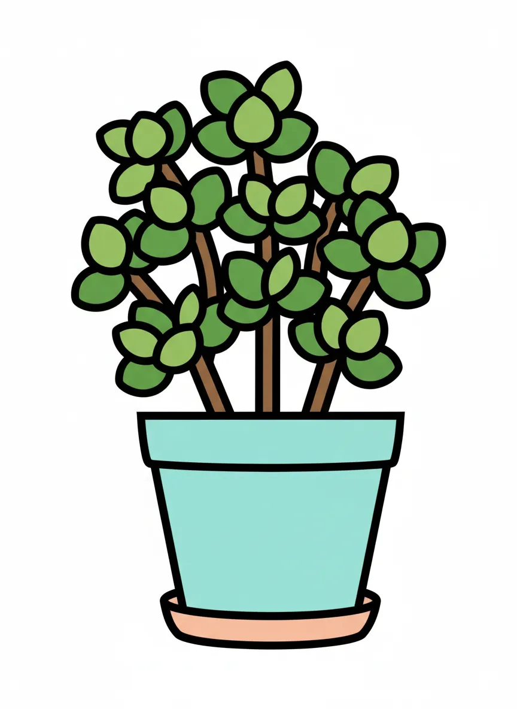
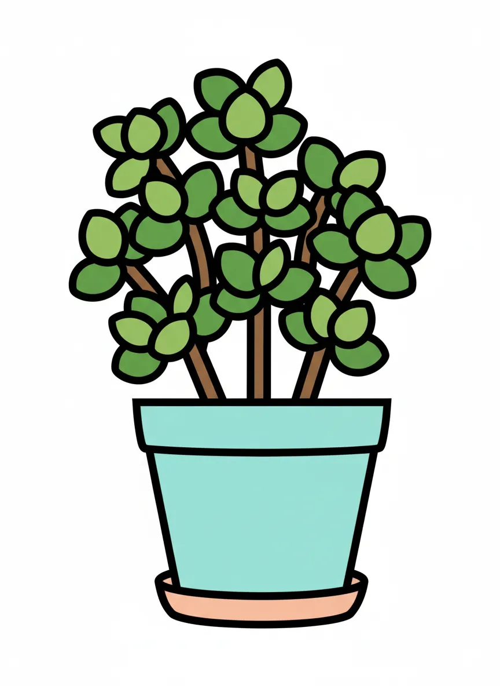

Ella Vollmer

 


Plant Mood
Ella Vollmer, aka Kalanchoe blossfeldiana, is living her best life on the living room workdesk. At 30 cm tall, she's practically a skyscraper in the houseplant world. Just look at her, thriving in her 15 cm plastic/coconut coir pot! She’s basically saying, 'I'm fabulous and I know it, now worship my good health!'
Plant Details
| Custom Name | Ella Vollmer |
| Scientific Name | Kalanchoe blossfeldiana |
| Health | Good |
| Size | 30 |
| Environment | Livingroom Workdesk |
| Has Grow Light | Unknown |
| Pot Type | potPlastic |
| Pot Soil | coconutCoirOrPeat |
| Pot Size | 15 |
| Has Drainage | Yes |
Care Schedule
| Action | Last Done | Next Due |
|---|---|---|
| Watering | ||
| Fertilizing | - | |
| Repotting | ||
| Cleaning | - | - |
| Progress Update | ||
| Misting | - | - |